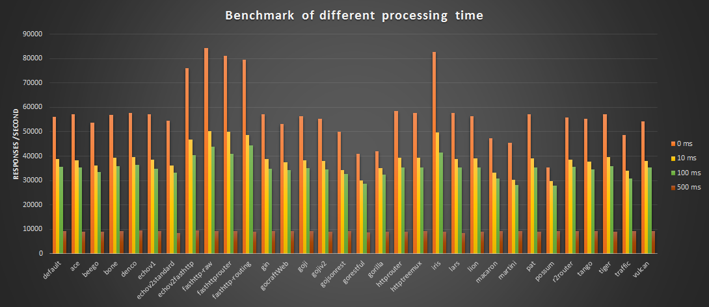
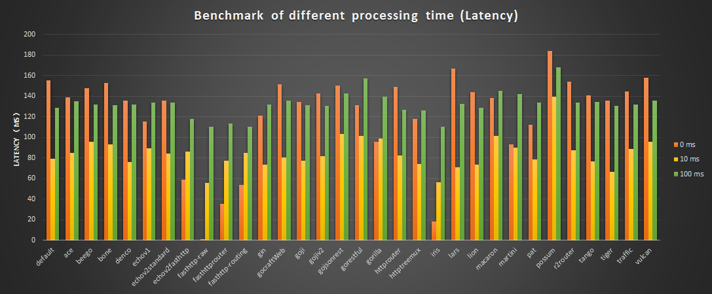
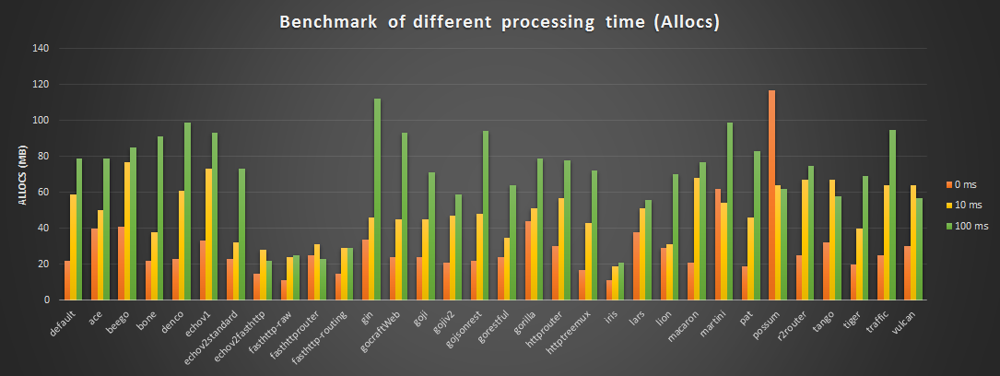
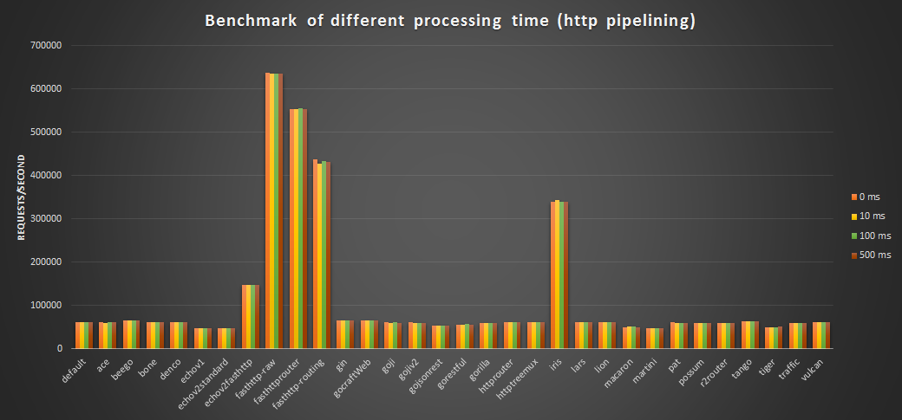
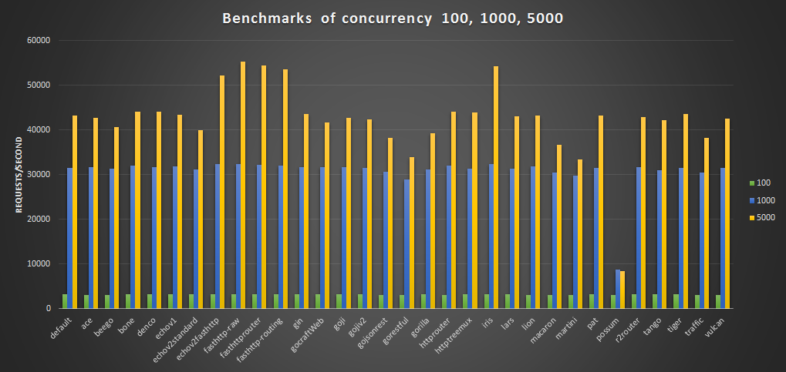
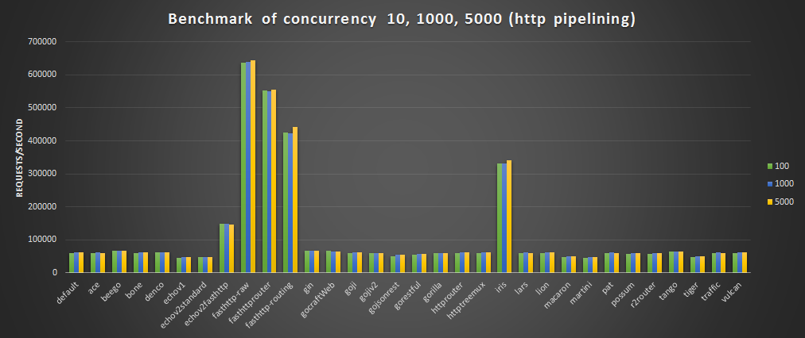

前几天我写了一篇文章: 超全的Go Http路由框架性能比较，利用Julien Schmidt实现的benchmark测试框架对几乎所有的go web框架的路由功能进行了比较。我本来以为对Go web框架的性能考察就告以段落了，直到我写了一段简单的代码测试Irsi，用来模拟实际产品中的处理，才发现了Julien Schmidt测试框架的问题。
这段代码是这样的：
|
|
当我将实际业务的处理时间模拟为10毫秒的时候，使用100并发进行测试：wrk -t16 -c100 -d30s http://127.0.0.1:8080/rest/hello，Iris吞吐率才达到97 requests/second。详细介绍可以看我的文章： iris 真的是最快的Golang 路由框架吗? 。
虽然Iris的作者很快做了修改，临时解决了这个问题，但是也促使我重新审视Julien Schmidt测试框架,也促使我实现了一个测试Go web framework benchmak的框架： Go web framework benchmark。
2016/04/12 updated: 现在Iris已经改成了fasthttp实现，性能超级好。
声明
最近一些人指控Iris的作者"偷"了其他人的代码，比如httprouter，而没有声明版权。基本上Iris的高性能来源于fasthttp和httprouter等一些框架的努力，作者在github上对iris项目的描述"世界上最快的web框架"明显是拉仇恨的。
虽然我对整个事件比较明了，但是我无意于加入这场争论，我创建go web framework benchmark的目的就是为了帮助开发者评估各个框架的性能，而不是要比个高下，更不期望以我的项目的测试结果去攻击别人或者贬低别人。基本上go web框架分为两个门派，基于标准库net/http的框架和基于fasthttp库的框架。明显，基于fasthttp库的框架性能要好于标准库，但是它们也有不足之处，比如和标准库不兼容(或者不容易兼容)，不支持http2等，你在选择的时候要懂得取舍。
重新审视Julien Schmidt测试框架
如果查看Julien Schmidt测试框架的测试结果以及实现，可以看到他测试的只是web框架的路由功能，包括路径中参数的解析， 并不是测试一个完整的web框架的处理(接受连接、路由、Handler处理)。
他利用Go的benchmark测试框架的方法，实现了N多的Benchmark方法，通过手工创建一个http.Request,传递给router进行路由处理。
并且，他的Handler的业务非常的简单，有的handler里面没有任何业务逻辑，只是空的方法体，有的只是将参数写回到Response中。这并不能反映实际的产品的业务处理。
在实际的业务中，Handler必然要包含一定的业务处理，也出处理的时间可能从几毫秒到上百毫秒不等，一些业务逻辑处理起来还非常的慢，比如：
- 从一个网络连接中读取数据
- 写数据到硬盘中
- 访问数据库
- 访问缓存服务器
- 调用其它服务，等待服务结果的返回
- ……
如果加上这些业务逻辑的处理时间，各个web框架benchmark是否还如路由功能的benchmark一样呢？
因为路由的处理时间在整个web框架中的处理时间所占的比例比较小，所以实际的web框架的benchmark有可能和路由的benchmark关系不大。即使路由的性能最好，如果handler的处理没有很好的处理的化，也可能整体的性能也不会特别出色。
如果想实现一个高性能的路由器，一定要尽量避免在路由处理时分配新的对象，高性能的路由器都实现了零分配，如httprouter、Iris等。
很多web框架的Handler处理和Go的缺省实现一样，还是在连接所在的goroutine中执行，也有的框架实现了goroutine池，由一个goroutine池来处理连接和handler，避免太多的goroutine分配和回收，性能可能会好一些。
实现一个Go web framework benchmark库
所以，有必要实现一个新的测试框架(库),完整测试web框架的性能，包括连接、路由、handler处理等，基于此，我实现了Go web framework benchmark。
它具有下面的功能：
- 为每个web框架实现了/hello的Http Get服务,它返回
hello world字符串。所有的web框架的实现都是一致的。 - 可以指定业务处理的时间，如10毫秒，100毫秒，500毫秒等
- 自动化测试
这个框架并没有测试其它功能，如Post、Put，也没有测试路由的参数解析的功能，它的本意是期望通过Get方法的测试来比较各个框架对业务的处理的能力。
根据Julien Schmidt测试框架中测试到的go web框架，在加上lion，fasthttp,一共测试了下面的web框架。
- default http
- macaron
- go-json-rest
- beego
- pat
- fasthttprouter
- lion
- httptreemux
- baa
- go-restful
- gin
- martini
- lars
- bone
- gocraft
- gorilla
- httprouter
- iris
- tango
- vulcan
- possum
- denco
- traffic
- ace
- fasthttp-routing
- go-tigertonic
- fasthttp
- r2router
- goji
- gojiv2
- echo
基本测试
首先我们先看一些业务逻辑处理时间分别为0ms，10ms,100ms,500ms时的各web框架的表现。
测试的并发数为5000。
|
|

平均处理时间(Latency)

内存占用

注解：
- possum在测试的时候出现N多的
http: multiple response.WriteHeader calls错误，它的性能比较低下。以下的测试possum也有问题。 - 默认的go标准库的实现性能已经很高
- 处理时间10ms和100ms， 各框架的性能差别不是特别巨大，但是500ms吞吐率下降的很厉害。
- 基于fasthttp实现的路由器/web框架表现非常好,如iris, fasthttprouter、fasthttp-routing, echo-fasthttp，但是echo-fasthttp由于要与net/http兼容，性能稍差一点。
如果开启http pipelining, fasthttp会远远好于net/http实现的框架。

并发量测试
我们以业务逻辑处理时间为30ms为基准，测试并发量为100，1000，5000的情况下web框架的性能。

注解：
- 大部分的框架的性能差不太多
- fasthttp表现还是非常好，是性能最好的框架，尤其在并发量大的情况下
- 并发量在1000的时候大部分的框架的吞吐率能达到3万/秒，并发量在5000的时候大部分二代框架能达到4万/秒
如果开启http pipelining, fasthttp会远远好于net/http实现的框架。

综上测试，大部分的go web框架性能表现还可以，加上处理时间的测试后性能差别不是很大，不像测试路由功能一样泾渭分明。
fasthttp表现非常的好，需要考虑的是如果选它做web框架，你的代码将难以迁移到别的框架上,因为它实现了和标准库net/http不一样的接口。
2016/04/19 更新： 增加了延迟时间Latency和内存占用的测试数据。